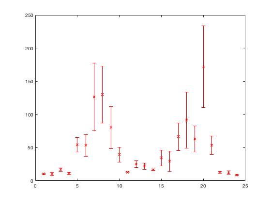
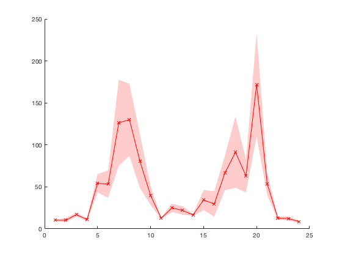
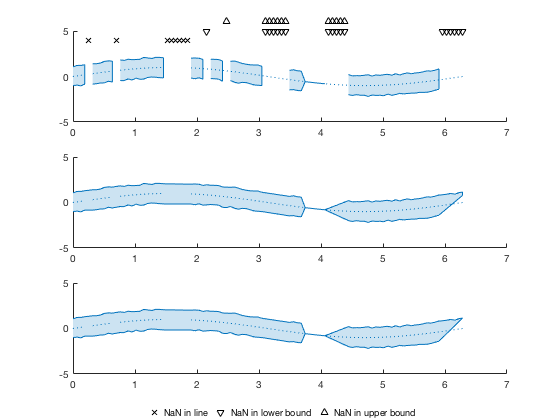
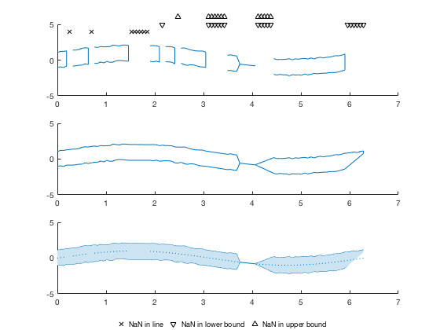

Contents
count = load('count.dat');
x = (1:size(count,1))';
y = mean(count,2);
e = std(count,1,2);
errorbar(x,y,e,'rx');

close all
lo = y - e;
hi = y + e;
hp = patch([x; x(end:-1:1); x(1)], [lo; hi(end:-1:1); lo(1)], 'r');
hold on;
hl = line(x,y);
set(hp, 'facecolor', [1 0.8 0.8], 'edgecolor', 'none');
set(hl, 'color', 'r', 'marker', 'x');

close all
[hl,hp] = boundedline(x,y,e, '-rx')
hl =
Line with properties:
Color: [1 0 0]
LineStyle: '-'
LineWidth: 0.5
Marker: 'x'
MarkerSize: 6
MarkerFaceColor: 'none'
XData: [1x24 double]
YData: [1x24 double]
ZData: [1x0 double]
Use GET to show all properties
hp =
Patch with properties:
FaceColor: [1 0.8 0.8]
FaceAlpha: 1
EdgeColor: 'none'
LineStyle: '-'
Faces: [1x48 double]
Vertices: [48x2 double]
Use GET to show all properties
A single line with all the types of gaps
clear all
close all
x = linspace(0, 2*pi, 100);
y = sin(x);
e = rand(100,2)*0.2+1;
e(60:65,:) = 0;
ln = [5 12 25:30];
lo = [35 50:55 66:70 95:100];
hi = [40 50:55 66:70];
y(ln) = NaN;
e(lo,1) = NaN;
e(hi,2) = NaN;
nanflag = {'gap', 'fill', 'remove'};
for ii = 1:length(nanflag)
ax(ii) = subplot(3,1,ii);
[hl(ii), hp(ii)] = boundedline(x,y,e, 'nan', nanflag{ii});
end
ho = outlinebounds(hl, hp);
set(hl, 'linestyle', ':');
hold(ax(1), 'on');
hm(1) = plot(ax(1), x(ln), ones(size(ln))*4, 'kx');
hm(2) = plot(ax(1), x(lo), ones(size(lo))*5, 'kv');
hm(3) = plot(ax(1), x(hi), ones(size(hi))*6, 'k^');
set(ax(1), 'ylim', ax(2).YLim);
set(hm, 'clipping', 'off');
legendflex(hm, {'NaN in line', 'NaN in lower bound', 'NaN in upper bound'}, ...
'ref', gcf, 'anchor', {'s','s'}, 'buffer', [0 0], 'box', 'off', ...
'nrow', 1, 'xscale', 0.5);

x = rand(100,1) * 10;
y = x.^2 + 5*rand(size(x));
p = polyfit(x,y,2);
hg = hggroup;
set([hp,hl], 'parent', hg);
